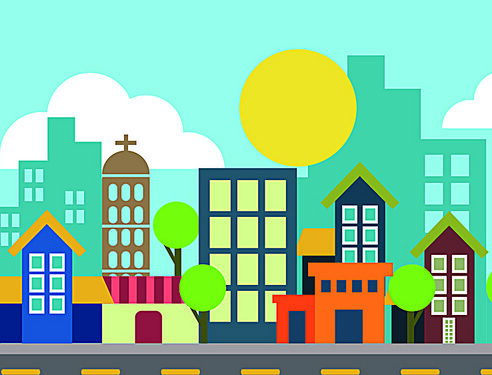
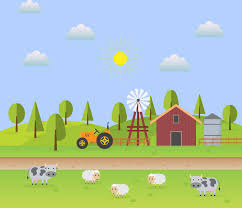

"O campo oferece calma e a cidade, oportunidades."

Cidade
A cidade é um ambiente caracterizado por uma maior densidade populacional, infraestrutura avançada e uma dinâmica acelerada de vida.

A vida no campo
"O campo é um ambiente que remete a uma vida mais tranquila, em contato direto com a natureza, onde as atividades rurais predominam. Ao contrário das grandes cidades, o campo oferece uma experiência de vida mais simples, porém com desafios específicos.""

Campo X Cidade
"A relação entre o campo e a cidade é complexa e interdependente. Ambos se influenciam de maneiras profundas, com a cidade absorvendo recursos do campo e, ao mesmo tempo, oferecendo oportunidades e serviços que nem sempre estão presentes no ambiente rural. ."